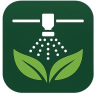

Comprobando conexión…
Recolecta el caudal de la boquilla durante 20 segundos, en 3 muestras. El promedio se calcula automáticamente.
Ancho cubierto, velocidad de avance, cobertura resultante y mojamiento final.
Área a cubrir y volumen de mezcla necesario para la aplicación.
Agrega uno o más tratamientos. Cada tratamiento puede tener hasta 3 productos: ingresa el nombre y la dosis (kg o L por hectárea) de cada uno para calcular su dosis por carga de caldo. Finalmente ingresa el remanente de cada tratamiento en L.
Los rangos de validación de cada campo son referenciales, pensados para detectar valores atípicos o mal ingresados. Ajusta tu criterio agronómico si tu caso particular lo requiere.
Genera un PDF tamaño carta con todos los valores ingresados y calculados, listo para imprimir o compartir.
¿Deseas limpiar estos campos?